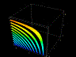
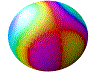
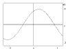
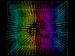

| DPGraph Documentation |
| Home | Buy | Free Viewer | Legacy Site Licensees Latest news: 12 Nov 2017 | Update to newest version: 19 Dec 2016 Math Art Gallery | Documentation | Links | Privacy | Contact |
After you have downloaded and installed either the full version of DPGraph or the free DPGraph Viewer you can click on the thumbnail pictures to view and manipulate the graphs. If your version of DPGraph or the DPGraph Viewer can't display a graph then you may need to update to the most recent version. To view the commands that created the graphs, click on Edit inside DPGraph or the Viewer. Some versions of Netscape require you to stop and restart your browser after installing.
New! French translations of some of the DPGraph documention, by Laurent Hivon. The files are in pdf format: DPGraph Online Help (in French), by Laurent Hivon and the DPGraph Parametric Graphing Examples (in French), by Laurent Hivon.
|
|
|
Click here for the documentation on parametric curves and surfaces, including examples. Information on creating implicit and vector graphs is below. There are also hundreds of examples in the gallery, and hundreds of examples are included with DPGraph and the DPGraph Viewer.
 You can use the color of the surface to encode an extra dimension of information. This seashell, contributed by Hassan Sedaghat, has been colored by setting GRAPH3D.COLOR := THETA in spherical coordinates. The fractional part of the color expression is mapped to a color wheel that goes from red at 0, through magenta, blue, cyan, green, yellow, and back to red at 1. |
If you'd like to display the level surfaces (equipotentials, isothermals, etc.) of a function f(x,y,z) at multiples of d, then graph sin(pi*f(x,y,z)/d)=0. For example, here's how to generate the level surfaces of (xy + yz + zx) at multiples of 3.0: GRAPH3D(SIN(PI*((X*Y) + (Y*Z) + (Z*X))/3.0) = 0). |
 One way to make a graph move is to use DPGraph's scrollbar to slice through it in the x, y, or z directions in real time. Here's a movie of the slicer sweeping through the previous level surfaces, showing what the inside of the graph looks like. Inside DPGraph, click on Scrollbar -> X (or Y or Z) slice -> OK. |
A fifth way to make any graph move is to click on ANIMATE from inside DPGraph and select continuous rotation. |
 A sixth way to make a graph move is to make the color of the surface time-dependent. This sphere has GRAPH3D.COLOR := (SIN(X+TIME)+SIN(Y))/3. |
In addition to using the slicer, another way to see inside a surface is to make it transparent. This is a movie of a jellyfish head, contributed by Michael Parker. |
|  You can set DPGraph's parameters to do 2D graphs, too. This graph lets you use DPGraph's scrollbar to change the variables A, B, and C to explore the classic sine curve y=a sin(bx+c) using GRAPH3D((Y = A*SIN(B*X+C), X=0, Y=0)). |
Notice that the coordinate axes are drawn as the 2D implicit plots x = 0 and y = 0. You can put as many 2D plots as you'd like into the list. For example, here is GRAPH3D((A*X^2+B*Y^2=C^2, X^2=SIN(Y^2), X=0, Y=0)). |
2D inequalities are special cases of 3D inequalities, so DPGraph can draw them with ease. For example, to fill the inside of the circle x^2+y^2<6, just GRAPH3D((X^2+Y^2<6 & Z>0, X=0, Y=0 )). |
DPGraph lets you display 7D graphs (3D arrays of time-dependent 3D vectors). Here is GRAPH3D( VECTOR(-SIN(THETA+TIME)/6, COS(THETA+TIME)/6, 0) ). |
 DPGraph even lets you display 8D graphs -- here is a 3D array of time-dependent 3D vectors, using color as an extra dimension to show a pressure wave propagating through the moving vectors by setting GRAPH3D.VECTORCOLOR := X/6+TIME/6. |
If you would only like a few vectors instead of a whole field of them, you can use the NEAR function to select a subset of the vectors. Here is GRAPH3D( VECTOR( NEAR(0,0,0)*A,B,C ) ): a single vector, centered around the origin, that you can move around using the Scrollbar to vary A, B, and C. |
FOLLOWING IS A COPY OF THE ONLINE HELP AVAILABLE INSIDE DPGRAPH.
Dynamic Photorealistic Graphing (DPGraph) -- the world's most powerful 2D through 8D graphing software, optimized for the internet.
Version 2016.12.19. Visit www.dpgraph.com for the full documentation, or click on Open and then Edit to examine the sample files for useful tips; this online help is a summary. Copying DPGraph for unlicensed users is illegal. DPGraph is a trademark of DPGraph. Other company and products names are trademarks or registered trademarks of their respective companies. Copyright (C) 1997-2016 by DPGraph. All rights reserved.
COMMON ERRORS: The seven most common mistakes when creating graphs in the EDIT dialog box are: 1) leaving out asterisks for multiplication; 2) leaving out equals signs or inequality signs; 3) leaving out the parentheses for lists; 4) trying to use equalities in intersections (DPGraph can only intersect inequalities, i.e. regions of space); and 5) putting a space inside the two-character symbols :=, >=, or <=; 6) using the parametric variables u or v in implicit graphs; and 7) using the implicit variables x, y, z, r, theta, rho, or phi in parametric graphs.
| Wrong: | Right: | |
graph3d( 3x = z^2 ) | graph3d( 3*x = z^2 ) | |
graph3d( x^2+y^2 ) | graph3d( z = x^2+y^2 ) | |
graph3d( x=1, y=1 ) | graph3d( ( x=1, y=1 ) ) | |
graph3d( x=1 & y=1 ) | graph3d( x>1 & y>=1 ) | |
graph3d( z^2> =x^2 ) | graph3d( z^2 >= x^2 ) | |
graph3d( z=u^2+v^2 ) | graph3d( z=x^2+y^2 ) | |
graph3d( rectangular(x,y,sin(x+y)) ) | graph3d( rectangular(u,v,sin(u+v)) ) |
INEQUALITIES: When graphing an inequality, such as GRAPH3D( X>1 ), remember that "blue is true"; the bluest side of the graph is the region of space for which the inequality is true, the reddest side of the graph is the region of space for which the inequality is false. If the inequality is true for the surface itself, as in GRAPH3D( X>=1 ), then the bluest side is pure blue; if the inequality is false for the surface itself, as in GRAPH3D( X>1 ), then the reddest side is pure red.
DEFAULTS.DPG: With experience you may find the following technique useful when exploring a new surface. OPEN the file DEFAULTS.DPG, go to EDIT, modify the default equation, and then EXECUTE. Since all of the options are already in DEFAULTS.DPG they can be changed with very little typing. If you like, SAVE the modified file under a different name and it will be ready for future viewing and adjustments.
RESOLUTION: The easiest way to improve the appearance of some graphs is to increase the resolution. The default resolution is 21 by 21 by 21 for implicit graphs, and 40 by 40 for parametric surfaces. To change the resolution for implicit graphs, use the EDIT dialog box to insert a line such as the following before the GRAPH3D command:
graph3d.resolution := 30
For parametric surfaces:
graph3d.stepu := 50 graph3d.stepsv := 50
You may find it useful to use the technique described in the previous section on DEFAULTS.DPG.
COPYING A GRAPH TO THE CLIPBOARD: Click on CLIPBOARD to copy a picture of the graph to the clipboard. To copy a picture of the entire window (including the border, etc.) to the clipboard, simultaneously press down the ALT and PRINTSCREEN keys. To copy a picture of the whole screen to the clipboard, press PRINTSCREEN.
COPYING A GRAPH INTO ANOTHER APPLICATION: If the other application supports pasting, first copy the graph to the clipboard. Then click on EDIT in the other application, then click on PASTE.
PRINTING A GRAPH: First copy the the graph to an application, such as Word or Paint, that supports printing. Then click on FILE in the other application, then click on PRINT.
FILE FORMAT: DPGraph files have a file type of .DPG. There are two kinds of DPG files: binary and ASCII. DPGraph can read and write either type of DPG file, but the DPGraph Viewer can only read binary DPG files. Binary DPG files are compressed and contain error detection information for more reliable transmission. ASCII DPG files are readable and editable by Notepad and many other text editors. Each line in the file is a separate command for DPGraph. For example, a file might look like this:
graph3d.view:=top graph3d.perspective:=false graph3d(z=3*sin(x*y))
Each command must start on a separate line. The GRAPH3D command must be the last command.
UNINSTALLATION: There are two ways to remove DPGraph from your hard disk drive. Method 1: click on START - SETTINGS - CONTROL PANEL - ADD/REMOVE PROGRAMS, then scroll to DPGraph in the window, select it, and click on ADD/REMOVE. Method 2: click on START - PROGRAMS - DPGRAPH - UNINSTALL.
OPTIONS: Non-numeric default values are given in capital letters.
graph3d.resolution | (resolution along longest side of box, default is 21; other sides of box have a resolution proportional to the length of the side) |
graph3d.mesh | (TRUE or false) |
graph3d.perspective | (TRUE or false) |
graph3d.box | (TRUE or false) |
graph3d.view | (STANDARD, top, side, front, or textbook) |
graph3d.contrast | (default is 1/2, range is 0 to 1) |
graph3d.transparency | (default is 0, range is 0 to 1) |
graph3d.background | (black, gray, WHITE, brown, red, yellow, green, cyan, blue, or magenta) |
graph3d.color | (BYHEIGHT, bysteepness, black, gray, white, brown, red, yellow, green, cyan, blue, magenta, or an expression depending on x, y, z, or time) |
graph3d.highlight | (default is 0, range is 0 to 1) |
graph3d.shading | (default is 0, range is 0 to 1) |
graph3d.vectorcolor | (BYHEIGHT, bysteepness, black, gray, white, brown, red, yellow, green, cyan, blue, magenta, or an expression depending on x, y, z, or time) |
graph3d.vectorhighlight | (default is 0, range is 0 to 1) |
graph3d.vectorshading | (default is 0, range is 0 to 1) |
graph3d.vectoralign | (TAIL, center, or tip) |
graph3d.vectorarrowhead | (true or FALSE) |
graph3d.minimumx | (default is -3) |
graph3d.maximumx | (default is 3) |
graph3d.minimumy | (default is -3) |
graph3d.maximumy | (default is 3) |
graph3d.minimumz | (default is -3) |
graph3d.maximumz | (default is 3) |
graph3d.minimumu | (default is -3) |
graph3d.maximumu | (default is 3) |
graph3d.stepsu | (default is 40) |
graph3d.minimumv | (default is -3) |
graph3d.maximumv | (default is 3) |
graph3d.stepsv | (default is 40) |
a.minimum | (scrollbar variable minimum value) |
a.maximum | (scrollbar variable maximum value) |
b.minimum | (scrollbar variable minimum value) |
b.maximum | (scrollbar variable maximum value) |
c.minimum | (scrollbar variable minimum value) |
c.maximum | (scrollbar variable maximum value) |
d.minimum | (scrollbar variable minimum value) |
d.maximum | (scrollbar variable maximum value) |
VALUES FOR OPTIONS:
true | (for mesh, perspective, box, and vectorarrowhead) |
false | (for mesh, perspective, box, and vectorarrowhead) |
standard | (for view, x is the most horizontal axis) |
textbook | (for view, y is the most horizontal axis) |
top | (for view) |
front | (for view) |
side | (for view) |
byheight | (for color or vectorcolor) |
bysteepness | (for color or vectorcolor) |
black | (for color, vectorcolor, or background) |
gray | (for color, vectorcolor, or background) |
white | (for color, vectorcolor, or background) |
brown | (for color, vectorcolor, or background) |
red | (for color, vectorcolor, or background) |
yellow | (for color, vectorcolor, or background) |
green | (for color, vectorcolor, or background) |
cyan | (for color, vectorcolor, or background) |
blue | (for color, vectorcolor, or background) |
magenta | (for color, vectorcolor, or background) |
tail | (for vectoralign) |
center | (for vectoralign) |
tip | (for vectoralign) |
CONSTANTS:
e | (base of natural logarithms) |
#e | (base of natural logarithms for Derive users) |
pi | (pi) |
VARIABLES:
x | (x variable for implicit graphing) |
y | (y variable for implicit graphing) |
z | (z variable for implicit graphing) |
r | (polar radius, r=sqrt(x^2+y^2)) |
theta | (polar angle, 0<=theta<2*pi, theta=angle(-x,-y)+pi) |
rho | (spherical radius, rho=sqrt(x^2+y^2+z^2)) |
phi | (spherical angle, 0<=phi<=pi, phi=angle(z,r)) |
u | (u variable for parametric graphs) |
v | (v variable for parametric graphs) |
a | (a variable for scrollbar) |
b | (b variable for scrollbar) |
c | (c variable for scrollbar) |
d | (d variable for scrollbar) |
time | (current time for graphs that change with time) |
SYMBOLS:
= | (equals, for entering equations) |
< | (less than, for entering inequalities) |
> | (greater than, for entering inequalities) |
<= | (less than or equal, for entering inequalities) |
>= | (greater than or equal, for entering inequalities) |
& | (intersection) |
:= | (assignment, for assigning values) |
(...) | (lists of arguments or equations) |
+ | (addition or leading plus sign) |
- | (subtraction or leading minus sign) |
* | (multiplication) |
/ | (division) |
^ | (powers) |
|...| | (absolute value, same as abs(...)) |
! | (factorial) |
ONE ARGUMENT FUNCTIONS:
abs | (absolute value, same as |...|) |
acos | (arccosine) |
acosh | (hyperbolic arccosine) |
acot | (arccotangent) |
acoth | (hyperbolic arccotangent) |
acsc | (arccosecant) |
acsch | (hyperbolic arccosecant) |
asec | (arcsecant) |
asech | (hyperbolic arcsecant) |
asin | (arcsine) |
asinh | (hyperbolic arcsine) |
atan | (arctangent) |
atanh | (hyperbolic arctangent) |
ceiling | (smallest integer >= argument) |
cos | (cosine) |
cosh | (hyperbolic cosine) |
cot | (cotangent) |
coth | (hyperbolic cotangent) |
csc | (cosecant) |
csch | (hyperbolic cosecant) |
floor | (greatest integer <= argument) |
gamma | (gamma function) |
ln | (log base e) |
log | (log base 10) |
nonneg | (1 if x>=0, else undefined) |
one | (1 if 0<=x<=1, else undefined) |
sec | (secant) |
sech | (hyperbolic secant) |
sign | (-1 if negative, 1 if positive, indefinite if 0 or indefinite) |
sin | (sine) |
sinh | (hyperbolic sine) |
sqr | (square) |
sqrt | (square root) |
tan | (tangent) |
tanh | (hyperbolic tangent) |
TWO ARGUMENT FUNCTIONS:
angle | (-pi <= angle of (x,y) from positive x axis <= pi) |
beta | (beta function) |
max | (maximum value) |
min | (minimum value) |
THREE ARGUMENT FUNCTIONS:
cylindrical | (parametric graph in cylindrical coordinates) |
near | (1 if (x,y,z) is near current grid, else undefined) |
rectangular | (parametric graph in rectangular coordinates) |
spherical | (parametric graph in spherical coordinates) |
vector | (graphs a vector field) |
KNOWN PROBLEMS:
Copyright © 1997-2018 by DPGraph. All rights reserved.